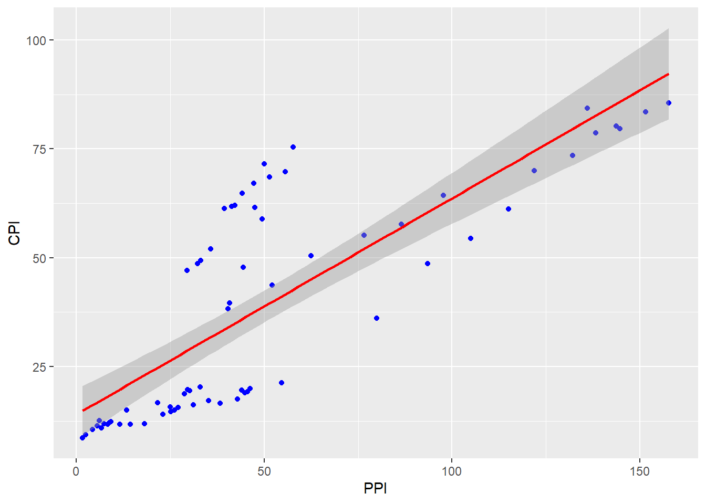
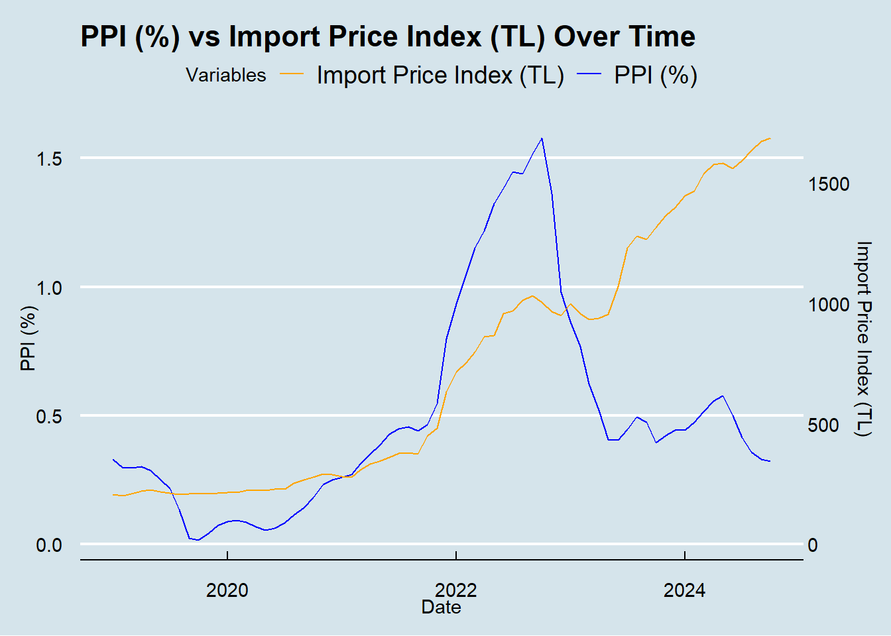

In this study, the relationship between the Producer Price Index (PPI) and the Consumer Price Index (CPI) has been analyzed. While PPI measures changes in the prices of goods and services at the producer level, CPI reflects changes in the prices paid by consumers. The interaction between these indices is crucial for understanding price formation processes, as changes in production costs (PPI) can often translate into consumer prices (CPI). This analysis examines how changes in PPI affect CPI and evaluates the interaction between these two economic indicators. Using historical data and various statistical methods, the direction and magnitude of this relationship have been revealed.
Based on this analysis we will choose PPI or CPI as our baseline to compare it’s effects on other economic indicators.
First let’s look the table we will use for analysis.We used annual percentage changes of the variables as index values.
First let’s look the table we will use for analysis.We used annual percentage changes of the variables as index values.
As you can see in the graph above,it seems both indexes have a similar behaviour over time.By just looking at this graph,we may think there is a strong relation between them.They track each others movement on the graph.But just visuality may not be enough therefore we will do a correlation test.
This correlation value supports visual data and says there is really strong relation between them.Also, p-value(1.087791e-16) is very low.Usually,results are considered significant if they are less than 0.5.In this case, the probability of the course of the situation arising by chance is extremely low.But what happens if there is some lag between interaction.Let’s do some lagged correlation tests.
data_ppi_cpi<- table_ppi_cpi %>%mutate(PPI_lag1 =lag(PPI, 1),PPI_lag2 =lag(PPI, 2),PPI_lag3 =lag(PPI, 3),PPI_lag4 =lag(PPI, 4),PPI_lag5 =lag(PPI, 5))cor_lag1_ppi_cpi <-cor(data_ppi_cpi$PPI_lag1, data_ppi_cpi$CPI, use ="complete.obs")cor_lag2_ppi_cpi <-cor(data_ppi_cpi$PPI_lag2, data_ppi_cpi$CPI, use ="complete.obs")cor_lag3_ppi_cpi <-cor(data_ppi_cpi$PPI_lag3, data_ppi_cpi$CPI, use ="complete.obs")cor_lag4_ppi_cpi <-cor(data_ppi_cpi$PPI_lag4, data_ppi_cpi$CPI, use ="complete.obs")print(cor_lag1_ppi_cpi)
[1] 0.8098936
print(cor_lag2_ppi_cpi)
[1] 0.7947913
print(cor_lag3_ppi_cpi)
[1] 0.7669985
print(cor_lag4_ppi_cpi)
[1] 0.732202
Highest correlation is 0.809 with a 1 unit time lag.More than 1 unit time lag,correlation values is decreasing and they are less than original correlation value.There is not an obvious increase on values with lag.But still it’s proves there is a strong relation between two index.But which index affects the other?Which index should we use as a independent variable to analyse other economic indicators’s behaviours?We should Grenger casuality test to decide.
grangertest(PPI ~ CPI, order =2, data = table_ppi_cpi)
Granger causality test
Model 1: PPI ~ Lags(PPI, 1:2) + Lags(CPI, 1:2)
Model 2: PPI ~ Lags(PPI, 1:2)
Res.Df Df F Pr(>F)
1 64
2 66 -2 2.3675 0.1019
grangertest(CPI ~ PPI, order =2, data = table_ppi_cpi)
First Granger test examines if CPI affects PPI values and it has a p-value as 0.1019 which is too high.That means CPI values does not have a effect on PPI values. On the other hand,second Granger test examinse if PPI affects CPI values and it has a p-value as 6.712e-05 which is very low.Generally p-values less than 0.05 considered statistically meaningful.Thus,we can say PPI values does affect CPI values. Finally we can say PPI can be independent variable for our further analysis.That’s why we choose PPI as our inflation rate. Before continue on further analysis we will do a regression analysis between PPI and CPI to better understanding of their relation.
reg_model <-lm(CPI ~ PPI, data = data_ppi_cpi)summary(reg_model)
Call:
lm(formula = CPI ~ PPI, data = data_ppi_cpi)
Residuals:
Min 1Q Median 3Q Max
-19.811 -10.354 -6.141 5.421 32.803
Coefficients:
Estimate Std. Error t value Pr(>|t|)
(Intercept) 13.99397 2.91415 4.802 8.8e-06 ***
PPI 0.49669 0.04548 10.921 < 2e-16 ***
---
Signif. codes: 0 '***' 0.001 '**' 0.01 '*' 0.05 '.' 0.1 ' ' 1
Residual standard error: 15.49 on 69 degrees of freedom
Multiple R-squared: 0.6335, Adjusted R-squared: 0.6282
F-statistic: 119.3 on 1 and 69 DF, p-value: < 2.2e-16
Let’s analys this result.
Intercept:13.99 This represents the predicted value of CPI when PPI (index) is zero.Practically, it indicates the starting point.
PPI Coefficient (index):0.49669 This coefficient shows that a one-unit increase in PPI leads to an average increase of 0.497 units in CPI. The positive sign indicates that an increase in PPI results in an increase in CPI.
P-values (for coefficients):
Intercept:p=8.8𝑒-0.6 PPI coefficient=p<2𝑒-16
Since the p-values for both coefficients are less than 0.05, they are statistically significant. This supports the conclusion that the independent variable (PPI) has a significant effect on the dependent variable (CPI).
Multiple R-squared:0.6335 This value indicates that the model explains 63.35% of the total variation in the CPI variable. This suggests a strong relationship, although 36.65% of the variation remains unexplained. The model has reasonable explanatory power.
F-Statistic:119.3, p< 2.2𝑒- 16
This test evaluates the overall significance of the model. It shows that PPI is a significant variable for predicting CPI. The very small p-value (< 0.05) confirms that the model as a whole is statistically significant.
Regression equation:
CPI = 13.99 + 0.49669.PPI
And there is graph with regression line.
reg_graph
`geom_smooth()` using formula = 'y ~ x'

2-Producer Price Index vs Credit Card Usage
In this study, the relationship between the Producer Price Index (PPI) and credit card usage has been analyzed. PPI measures changes in the prices of goods and services at the producer level, while credit card usage is an important indicator reflecting consumer spending habits and economic activity. The interaction between these two variables is critical for understanding the impact of economic fluctuations and price changes on consumer behavior. Using historical data, the study examines how changes in PPI affect credit card usage and evaluates the direction and magnitude of this relationship through various statistical methods.
Data we will use is again annual percentage changes for both variables and it accounts last 6 years since 2019.
First let’s take a look our data frame!
setwd("C:/Users/Barış/Desktop/vfdbcbcv")ccu <-read_excel("credit.xlsx")ppi <-read_excel("ppi.xlsx")table_ppi_ccu <-left_join(ppi,ccu, by ="Tarih")table_ppi_ccu$Tarih <-as.Date(paste0("01-", table_ppi_ccu$Tarih), format ="%d-%m-%Y")head(table_ppi_ccu,10)
We can make a legitimate guess about their relation with this visualized data.But we need analytical results to interpret the results.Therefore, we will do a correlation test between them.
Correlation value for PPI and CCU is 0.603 which is pretty high.This means there is a relaively strong relation between them.Also p-value is less than 0.05 which means it is statistically meaningful.We also will do a correlation test with time lag to go deeper.
data_ppi_ccu <- table_ppi_ccu %>%mutate(PPI_lag1 =lag(PPI, 1),PPI_lag2 =lag(PPI, 2),PPI_lag3 =lag(PPI, 3),PPI_lag4=lag(PPI,4),PPI_lag5=lag(PPI,5))cor_lag1_ppi_ccu <-cor(data_ppi_ccu$PPI_lag1, data_ppi_ccu$usage, use ="complete.obs")cor_lag2_ppi_ccu <-cor(data_ppi_ccu$PPI_lag2, data_ppi_ccu$usage, use ="complete.obs")cor_lag3_ppi_ccu <-cor(data_ppi_ccu$PPI_lag3, data_ppi_ccu$usage, use ="complete.obs")cor_lag4_ppi_ccu <-cor(data_ppi_ccu$PPI_lag4, data_ppi_ccu$usage, use ="complete.obs")cor_lag5_ppi_ccu <-cor(data_ppi_ccu$PPI_lag5, data_ppi_ccu$usage, use ="complete.obs")print(cor_lag1_ppi_ccu)
[1] 0.6165495
print(cor_lag2_ppi_ccu)
[1] 0.6422825
print(cor_lag3_ppi_ccu)
[1] 0.6536861
print(cor_lag4_ppi_ccu)
[1] 0.6713074
print(cor_lag5_ppi_ccu)
[1] 0.6726063
As the lag time increases, the correlation value increases. After the 4th and 5th delay, the rate of increase slows down.So we can say PPI values causes CCU Therefore, we can say that PPI has a delayed effect on credit card usage which is higher than correlation value without time lag.
graph_import <- dataefe |>ggplot(aes(x = Date)) +geom_line(aes(y =`PPI (%)`, color ="PPI (%)")) +geom_line(aes(y =`Import Unit Value Index (TL)`* scale_import, color ="Import Price Index (TL)")) +scale_y_continuous(name ="PPI (%)",sec.axis =sec_axis(~ . / scale_import, name ="Import Price Index (TL)") ) +scale_color_manual(values =c("PPI (%)"="blue", "Import Price Index (TL)"="orange")) +labs(title ="PPI (%) vs Import Price Index (TL) Over Time",x ="Date",y ="PPI (%)",color ="Variables") +theme_minimal() +theme_economist()graph_import

library(dplyr)cor_ppi_usd <- dataefe %>%summarize(correlation =cor(`PPI (%)`, USD, use ="complete.obs", method ="pearson"))cor_ppi_import <- dataefe %>%summarize(correlation =cor(`PPI (%)`, `Import Unit Value Index (TL)`, use ="complete.obs", method ="pearson"))